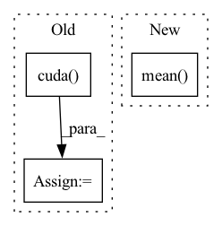

Pattern ID :30034
Before Change
def sweep_n(ntensor, niter, dtype):
print("n, dtype, ntensor, gflop, runtime, tflop/s")
for n in [16, 32, 64, 128, 256, 512, 1024, 2048, 4096]:
nt_a = torch.nested_tensor(
[torch.randn(n, n).to(dtype).cuda() for t in range(ntensor)]
)
nt_b = torch.nested_tensor(
[torch.randn(n, n).to(dtype).cuda() for t in range(ntensor)]After Change
nt_a_size = torch.ops.aten._nested_tensor_size(nt_a)
lengths = nt_a_size[:, 1]
print(",".join(map(str, [ntensor, dtype, lengths.min().item(),
lengths.float().mean() .item(), lengths.max().item(), runtime])))
if __name__ == "__main__":In pattern: SUPERPATTERN
Frequency: 3
Non-data size: 3
Instances Fragment ID: 89203187
Project Name: pytorch/pytorch
Commit Name: 943b20e7ae290d8e71f877eb700f197a9df56cbe
Time: 2022-11-02
Author: cpuhrsch@fb.com
File Name: benchmarks/nested/nested_bmm_bench.py
M Class Name: AnonimousClass
N Class Name: AnonimousClass
M Method Name: sweep_n(2)
N Method Name: sweep_n(3)
M Parent Class:
N Parent Class:
M File Name: benchmarks/nested/nested_bmm_bench.py
N File Name: benchmarks/nested/nested_bmm_bench.py
M Start Line: 22
M End Line: 33
N Start Line: 24
N End Line: 40
Before Change
data_time.update(time.time() - end)
if args.cuda: // model_deep.cuda():
input = input.cuda()
if type(target) is torch.Tensor:
target = target.cuda()
elif type(target) in (tuple, list):
target = (target[0].cuda(), target[1].cuda())After Change
Log Learning Rate, Benchmarks etc.
if i % 10 == 0:
experiment.log_metric("learning/train_10_batch_loss", np.mean( loss_values) , step=step_batch)
logger.add_scalar("learning/train_loss", np.mean(loss_values), step_batch)
logger.add_scalar("data/eval_time", batch_time.val, step_batch) Fragment ID: 89203189
Project Name: turagalab/decode
Commit Name: a5c4769ad28b4a03dafa04e795307eed30b4c264
Time: 2019-03-26
Author: gitdev@LRM.photo
File Name: deepsmlm/neuralfitter/train_test.py
M Class Name: AnonimousClass
N Class Name: AnonimousClass
M Method Name: train(8)
N Method Name: train(7)
M Parent Class:
N Parent Class:
M File Name: deepsmlm/neuralfitter/train_test.py
N File Name: deepsmlm/neuralfitter/train_test.py
M Start Line: 36
M End Line: 72
N Start Line: 29
N End Line: 112
Before Change
if self.cuda:
y_true = y_true.cuda()
noobj_mask = noobj_mask.cuda()
box_loss_scale = box_loss_scale.cuda()
//-----------------------------------------------------------//
// reshape_y_true[...,2:3]和reshape_y_true[...,3:4]
// 表示真实框的宽高，二者均在0-1之间
// 真实框越大，比重越小，小框的比重更大。After Change
tobj = torch.where(y_true[..., 4] == 1, giou.detach().clamp(0), torch.zeros_like(y_true[..., 4]))
else:
tobj = torch.zeros_like(y_true[..., 4])
loss_conf = torch.mean( self.BCELoss(conf, tobj))
if n != 0:
print(loss_loc * self.box_ratio, loss_cls * self.cls_ratio, loss_conf * self.balance[l] * self.obj_ratio)
loss += loss_conf * self.balance[l] * self.obj_ratio Fragment ID: 89203194
Project Name: bubbliiiing/yolov5-pytorch
Commit Name: 27ae9bd10c96138c60752d1da4fa965c0b7372f3
Time: 2022-01-21
Author: 47347516+bubbliiiing@users.noreply.github.com
File Name: nets/yolo_training.py
M Class Name: YOLOLoss
N Class Name: YOLOLoss
M Method Name: forward(4)
N Method Name: forward(4)
M Parent Class: nn.Module
N Parent Class: nn.Module
M File Name: nets/yolo_training.py
N File Name: nets/yolo_training.py
M Start Line: 156
M End Line: 200
N Start Line: 159
N End Line: 201